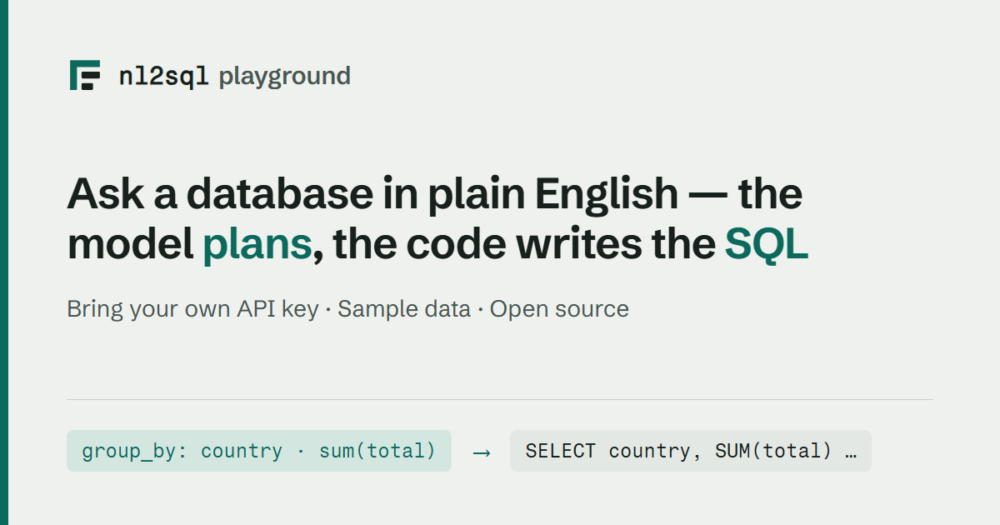

Hosted demo
nl2sql demo --hosted serves the playground as a public demo of the sample
databases, where the server holds no API key and every visitor brings their
own.
It is a third state, not a loosened --allow-settings. Locally, nl2sql demo
saves your key to the demo project's .env.demo and spends it on your
questions; that is right on your own machine and wrong on a shared address.
Hosted mode removes the key from the server entirely instead of relaxing the
gate that protects it.
local (nl2sql demo) |
hosted (nl2sql demo --hosted) |
|
|---|---|---|
| the API keys | saved to .env.demo, used by the process |
one per provider, held by the browser tab, sent per request, used in memory, dropped |
| a model per step | written to configs/llm.demo.yaml |
chosen in the browser tab, sent per request, saved nowhere |
| Settings | writes .env.demo and configs/llm.demo.yaml |
writes nothing; the page keeps the keys and the choices |
| Rebuild | on (loopback, or --allow-settings) |
refused |
| Answer ratings | on (loopback, or --allow-settings) |
off |
| Retrieval inspector | on (loopback, or --allow-settings) |
on, read only, at the hosted rate |
| Pipeline page | on | on, read only: it names the steps and their models, never a key |
--record |
supported | refused before the server starts |
| a visitor with no key | replay mode, if no key is configured | the guided questions replay recorded runs; anything else asks for a key |
| the sample databases | read-only | read-only |
| limits | none | a rate limit per visitor and a cap per session |
NL2SQL_DEMO_HOSTED=1 does the same thing without a command line, which is how
a container turns it on.
Recorded answers without a key
A visitor does not need a key to see the demo work. The guided questions are
answered from recordings of real runs: every model step's actual reply to
each guided question, captured once from a Claude model and shipped in the wheel
at nl2sql/cli/demo/recordings/chinook.json (none ship until the first
recording run below has been made and merged). At start-up the hosted server loads
them into a replay server on loopback (the same FakeLLMServer local replay
mode uses) and, for a question that carries no key:
- a guided question with a recording runs the whole pipeline -- retrieval,
the checks, SQL generation and the query against the sample database are all
real and run now -- with each model step answered from the recording. The
response carries
"recorded": true, and the page puts a Recorded run badge beside the question, so nobody mistakes it for a live run. It is paced by the per-minute limit but not counted against the session cap, since it spends nothing. - anything else never runs. It answers
200with"replay_miss": trueand the sentence "No recorded answer for this question. Add an API key to ask it live."; the page shows that with an Add a key in Settings button.
With a key, every question -- guided or not -- runs live on that key, exactly as
before. /api/meta lists the questions that replay as recorded, and the page
marks those chips with a dot.
The model a replayed run names is the one that recorded it. The recordings
file says which provider and model answered ({"provider": "anthropic", "model":
"claude-opus-5", "recordings": [...]}; a bare list, the older format, still
loads and names none). The hosted server's own config falls back to an OpenAI
default, so without this a keyless visitor would be told a model produced the
answer that did not. Instead, a keyless replay asks the replay server for the
recorded model, which echoes it, so every call in the run's usage ledger -- and
the Debug pane and the trace with it -- names claude-opus-5. /api/meta and
/api/pipeline report the same recorded_with, and the Pipeline page shows
that model on each model step, tagged recorded, until the visitor adds a
key; then it shows the models their run will use, as before. Local replay mode
(nl2sql demo with no key) does the same.
If no recordings ship (the file is missing or covers no guided question), the keyless path still works: the chips and the question box stay open and every question answers with the key prompt. The console line at start-up says which: "N guided questions answer from recordings without a key", or "No recordings ship with this install".
Making the recordings
The recordings are made with a real Claude model, which costs money, so it is a deliberate act, never part of CI. Either:
- Locally, from the repository root:
It reads ANTHROPIC_API_KEY from the environment or, failing that, from the
repository root's .env (python-dotenv, the loader the engine uses; nothing
prints the key), sets any OpenAI or OpenRouter key aside for the run, builds
a fresh demo project, runs nl2sql demo --record through the recording proxy
on Anthropic's own wire with the Anthropic preset's default model, and writes
packages/nl2sql/src/nl2sql/cli/demo/recordings/chinook.json, stamped with
the provider and the model the proxy saw requested. A question is
recorded only when its run succeeded -- rows, an answer, no error. A failed
run's recordings are dropped, because every model call is recorded as it
passes through the proxy and a run that failed in the aggregator would
otherwise still count (a real run once said "Recorded 20 of 20" with ten
failed). The file is written with the runs that succeeded, and every question
that was not recorded is listed with its error. It exits 0
when every guided question was recorded, 1 when some were not or when the
demo stopped before recording (its indexing failed: nl2sql demo --record
refuses to record answers given against no index, and nothing is written),
2 with no key or without langchain-anthropic
(pip install "nl2sql-engine[anthropic]"). Its output is safe to redirect
to a file on Windows: it makes stdout and stderr UTF-8 before the demo prints
anything. Review the diff and commit it.
- In CI, Actions → Record demo answers → Run workflow
(.github/workflows/record_demo.yml). It runs the same script with the
repository secret ANTHROPIC_API_KEY and opens a pull request with the new
recordings. It only ever runs by hand. The same workflow with record: clips
re-records the playground home page's clips, which needs no key: Ask's clip is
made from these recordings, so record the answers first.
The recordings ship inside the nl2sql-engine wheel, and the public Space runs
released versions only, so merged recordings reach the Space with the next
release (see Deployed by the release), not when
their pull request merges.
tests/e2e/test_record_demo_answers_fake_llm.py runs the whole chain -- the
script, the proxy on the Anthropic wire, a keyless hosted visitor replaying the
result -- against a stand-in provider, so it is tested with no key and nothing
spent.
What the visitor's key does, and does not do
A visitor without a key is told what they can do before they ask. The Ask page opens with the pitch and, when recordings ship, the guided questions straight under it, the recorded ones marked; the key form (a provider choice, the key and Use this key, under three facts -- Stored in this browser tab only, Sent with each question in a request header, Never written to disk, logs or traces) is folded under Use your own key, and open from the start when nothing is recorded. Nothing is disabled: a question nobody recorded comes back with the way to add a key. The moment a key is saved the block clears, with no reload. The status pill in the top bar reads Hosted demo · Recorded runs (or Hosted demo · No key yet with nothing recorded), and once there is a key it names whose key answers (Hosted demo · OpenAI key in this tab), with the limits in its tooltip. None of this appears in local mode.
The visitor pastes a key on the Settings page, one per provider. From there:
- The browser keeps it, in that tab's
sessionStorage, under that provider's own name. Closing the tab clears it. Nothing else in the page reads it. - It travels as a request header of its own,
X-NL2SQL-Api-Key-<provider>(X-NL2SQL-Api-Key-anthropic), onPOST /api/askand nowhere else. A header rather than the body, because a body is what request logs and validation errors quote back; one header per provider, so a key never shares a header with anything else and nothing that parses or quotes a header can expose two at once. With exactly one key the olderX-NL2SQL-Api-Keyis sent as well, and on its own it still means what it always did. The playground is served over plain HTTP locally and over the host's TLS when it is published, so deploy it behind HTTPS. - The server uses it for that one request. It is bound to the request with
nl2sql.llm.request_keyand the LLM registry builds each step's client from it while the pipeline graph is constructed. The client is cached nowhere, so no later request and no other visitor can be handed it. - Then it is gone. It is never written to a file, never put in an environment variable, never held in a module-level cache, and never included in a response.
A key sent without naming a provider has its provider read from its shape,
exactly as --api-key does: sk-ant- is Anthropic, sk-or- is OpenRouter,
anything else is OpenAI. Such a key also moves the model to that provider's
default when it differs from the server's configured one, since a gpt- model
means nothing to Anthropic.
A model for each step
Choosing a model asks the server to remember nothing, so hosted mode keeps it.
Under Model for each step on the Settings page (open beside the key card on a wide window, collapsed on a narrow one), the
visitor can put each of the five model-using steps on a provider and model of
their own. The choice lives in the same tab's sessionStorage and travels with
each question in one more header:
A compact JSON object, agent name to provider:model, and nothing else; it
carries no secret, which is why it is the one header the server parses and the
one thing a refusal repeats. A step with no entry runs on the configured
default, so the simple path stays one key, the defaults, and a question.
The server checks every name against what the engine knows -- the pipeline's
own steps, and the verified model lists in nl2sql/llm/providers.py -- before
anything reaches a client. Each step is then built from the key for the
provider it names: the planner can be on Claude while the answer writer stays
on OpenAI, each calling its own endpoint with its own key.
A step whose chosen provider has no key is refused before the question
runs, with 400 and a sentence naming both, for example "The Query planner
step is set to run on Anthropic, but no Anthropic key was supplied. Add one
under Settings, or put that step back on a provider you have a key for."
Nothing is spent on the keys that were supplied. A step nobody chose a provider
for is never refused this way: it takes the key for the provider it is
configured on, or, failing that, the first key the request brought, exactly as
a single key has always worked.
What it does not do:
- It is not stored, so it cannot be reused for anyone else's question, and there is nothing to leak if the container is compromised later.
- It does not reach a trace. Run traces are written as usual (that is what the
playground's Debug drill-down reads), and the trace redactor is told about
the request's key along with every other credential, so it is masked if it ever
reaches a prompt or an error. The demo project ships
TRACE_MODE=always, so every question leaves a file on the container's own disk;TRACE_MODE=on_failurekeeps only the runs that went wrong. - It does not reach the log. Nothing logs the header, and errors about a key report its type, never its value.
- It does not reach your data. The hosted demo answers only from the three sample databases shipped with the engine.
A question with no key at all is never a 401: it replays, or it is a replay
miss that asks for a key (see above). A
malformed key answers 400 without quoting what was sent, and no refusal
ever repeats something shaped like a key, not even when one was pasted into the
model header by hand.
Limits
Both live in this one process's memory. There are no accounts, no analytics and no storage.
| Limit | Default | Environment variable | Keyed by |
|---|---|---|---|
| Questions per minute | 6 | NL2SQL_DEMO_QUESTIONS_PER_MINUTE |
client address (a token bucket) |
| Questions per session | 30 | NL2SQL_DEMO_QUESTIONS_PER_SESSION |
a random session cookie |
| Query timeout | 300s | GLOBAL_TIMEOUT_SEC |
the run |
| Rows returned | 1000 | the datasource's row_limit option |
the query |
Hitting one is a 429 with a sentence, never a stack trace: the rate limit says
to wait a moment, the session cap says to run the demo locally for no limit at
all. The retrieval inspector spends from the same rate bucket (it costs no
tokens, but it does embed text) and does not count against the session's
questions.
A question is charged when it arrives, before it runs, so one the visitor stops still counts toward both limits. Stopping does end the work: the page aborts its request, the server sees the connection close and cancels the run before its next step or model call (the call already in flight finishes).
The session cookie is a random token this process made up. It names no visitor, carries no key, and exists only so the session cap has something to count. A visitor who clears their cookies starts a new session; the rate limit, which is keyed by address, is what holds the pace down in the meantime.
What is off, and what is on
Off: Settings persistence (choosing a model is on; it is only the saving
that is off), Rebuild, answer ratings, and --record (refused
before the server starts). --api-key is refused too: a server-side key is the
one thing hosted mode is built to avoid, and any provider key exported into the
process is cleared at start-up so nothing can fall back to it.
Rebuild being off is said on the page rather than left as a gap: the index panel reports that the index was built before the demo started and which databases it covers, and where the button would be it prints the server's own reason -- rebuilding writes to disk and the sample data never changes.
On: the guided questions without a key, from recorded runs; asking them or any other question live with a key; a key per provider and a model per step (both kept by the browser), the schema view of any of the three databases (the rail's Showing switcher), which database answered a run, the per-node Debug drill-down with its traces, and the retrieval inspector read-only.
Read-only sample data
The demo's three SQLite databases are configured with read_only: true under
their connection options, which opens them through SQLite's own URI form with
mode=ro. The driver refuses a write before any SQL is parsed, under the RBAC
policy and the validator rather than instead of them. This is not specific to
hosted mode: nothing in the engine writes to a demo database, so they are opened
read-only everywhere.
The container
deploy/huggingface/Dockerfile builds the playground as a hosted demo. It is a
Space root rather than a repository build: it needs no build context, so the
whole deploy is that one folder, copied to the Space's root.
It installs whatever the one build argument NL2SQL_SPEC names. On the Space
that is always a released version from PyPI,
nl2sql-engine[demo]==X.Y.Z, written into the copy of the Dockerfile the
release pushes. The checked-in default is a GitHub archive of the tip of
main, which is only what a local docker build gets; pass
--build-arg NL2SQL_SPEC="nl2sql-engine[demo]==X.Y.Z" to build a release
locally. Then it runs nl2sql setup --demo at build time. That bakes three
things into the image so the container reaches nothing but the model at run
time and the first question is answered at once:
- the three sample databases and their configs,
- their vector index, built with the local embedder,
- the local embedding model itself, roughly 79 MB of ONNX
all-MiniLM-L6-v2that chromadb would otherwise download on the first question. The 83 MB archive it was extracted from is deleted; chroma reaches for it only when the extracted files are missing.
The container runs as uid 1000 (not root), listens on $PORT (7860 by
default, which is what a Space routes to), and carries a healthcheck that polls
/api/health. That route reads nothing but process state and answers
{"status": "ok", "version": "X.Y.Z"}, the installed nl2sql-engine
version, in every mode; the release pipeline polls it on the live Space to
know the new version is the one being served. NL2SQL_DEMO_HOSTED=1 is set in
the image, so hosted mode holds even if the command is overridden.
docker compose up --build in the same folder does it through
docker-compose.yml, which builds the same image with the same settings.
Measured on a build of this Dockerfile: 1175 MB on the container's own
filesystem (docker image ls reports 1.65 GB, which includes the build
attestations). Most of it is chromadb's transitive dependencies (polars,
pyarrow, kubernetes, onnxruntime), which the vector store needs. Boot is
about 5 seconds from docker run to the first answered request, and a
guided question through a stand-in provider answered in 1.2 seconds.
Deploying it as a Hugging Face Space
The Space is nadeem4nk/nl2sql-demo: public, Docker SDK, CPU basic. The full
steps, and what each Space setting does, are in
deploy/huggingface/README.md -- that file is also the Space's
own front page, since a Docker Space reads its configuration from the
front-matter of the README.md at its root.
The Space serves at https://nadeem4nk-nl2sql-demo.hf.space.
Never give the Space an API key, as a secret or otherwise. Hosted mode clears any provider key it finds in its environment at start-up rather than use it, because a key there would be spent by every visitor.
Deployed by the release
The public Space runs released versions only, and a release deploys it
with nothing to do by hand. Merging the release pull request tags vX.Y.Z, and
publish_pypi.yaml then runs, in order:
flowchart LR
PY[pypi: the three packages<br/>reach PyPI] --> PS[pypi-smoke: install X.Y.Z<br/>from PyPI, boot the demo]
PS --> SP[space: publish_space.yml<br/>pins and pushes the Space]
SP --> SS[space-smoke: the live URL<br/>reports X.Y.Z]pypi-smokeinstallsnl2sql-engine[demo]==X.Y.Zfrom PyPI into an empty virtualenv on a fresh runner, boots this samenl2sql demo --hostedwith no key and checks it serves. The Space is never built on a version that does not install from PyPI.spacecallspublish_space.ymlwith the tag. It mirrorsdeploy/huggingface/onto the Space's root, pins the image to the release, pushes, and waits for the Hub to build it. Before pushing it waits until PyPI's simple index listsX.Y.Z, and the Dockerfile retries its install (10 attempts, 30 seconds apart): the index the Hub's builder sees can lag a fresh upload, which is what failedv0.2.0's first Space build.space-smokepollshttps://nadeem4nk-nl2sql-demo.hf.space/api/healthuntil it reportsX.Y.Z, then checks the page and/api/meta. A Space goes on serving its previous image while the new one builds, so a build that finished is not yet proof that visitors see it.
The whole release flow is in Releasing.
A push to main does not deploy the Space. It used to: every merge that
touched the engine, the playground or this folder rebuilt the public demo from
that commit, so the demo ran code no release contained, and a broken merge
reached visitors before anyone had decided to ship it. Now a merge reaches the
Space with the next release. Nothing is lost by waiting: the fresh-install
job on every pull request builds the wheels, installs them as a user would and
boots this exact command, so a change that would break the Space fails its PR.
To see a change running on a Space before it is released, deploy it to a
scratch Space of your own (below), never to the public one.
What a deploy puts at the Space root. The four files of
deploy/huggingface/ -- Dockerfile, README.md (the Space's configuration
and front page), docker-compose.yml, and SOURCE_SHA -- with two of them
rewritten:
| At the Space root | What the deploy writes |
|---|---|
Dockerfile |
its ARG NL2SQL_SPEC= line: nl2sql-engine[demo]==X.Y.Z for a release, or a GitHub archive of the commit for a tagless run by hand |
SOURCE_SHA |
the full sha of the repository commit the deploy came from -- the tagged commit, on a release |
The Dockerfile rewrite is what makes the Space run the release: the same
bytes a user gets from pip install, not whatever main was at build time.
Because the text of the ARG line changes with every release, the Hub always
has a new commit to rebuild on and the layer cache below it is busted, so the
engine is genuinely reinstalled. The workflow rewrites the default rather than
passing --build-arg, because a Space build takes no build arguments from us;
a grep right after the rewrite fails the deploy if that line is ever
renamed, instead of quietly shipping a Space that builds something else.
The one secret. A Hugging Face access token with write permission
(https://huggingface.co/settings/tokens), added as the repository secret
HF_TOKEN at
https://github.com/nadeem4/nl2sql/settings/secrets/actions. That is the only
credential the workflow uses. release_please.yml and publish_pypi.yaml hand
it down with secrets: inherit, since a called workflow sees no secret it is
not given. Without it -- on a fork, or before it is added -- the deploy logs a
line saying so and finishes green, space-smoke is skipped, and the rest of
the release is unaffected; it never fails for a missing secret.
The token is read into the job's environment and used in exactly two places: by
huggingface_hub, which picks HF_TOKEN up from the environment on its own,
and as the password in the git push URL. It is never echoed, never traced (no
set -x), and never written to a file: the Space remote is passed to each git
command rather than saved into .git/config.
What it reports. The job never calls a build that did not happen a success.
If the push produced a commit, the workflow checks the Space's head is that
commit, then waits for a build to actually start and finish; a Space that never
starts one within five minutes fails the job rather than reporting the previous
build's RUNNING. If there was nothing to push -- the same release deployed
twice -- the Hub starts no build on its own, so the workflow asks it for a
factory rebuild (restart_space(..., factory_reboot=True)) whenever the Space
is not running, and on every run by hand unless factory_rebuild is unticked,
then waits for that build the same way; the summary reads "Factory
rebuild". Only a release re-run against a Space already running that deploy
skips the rebuild, and its summary reads "No rebuild". The job succeeds
only when the Space ends RUNNING: a redeploy of v0.2.0 once found the Space
in BUILD_ERROR, pushed nothing and still went green, which is what this
closes. One deploy runs at a time; a run overtaken by a newer one is cancelled.
By hand. Actions → Publish Space → Run workflow, or:
Four optional inputs: tag, the release to deploy; space_id, which defaults
to nadeem4nk/nl2sql-demo; token_secret, the name of the secret holding
the token, which defaults to HF_TOKEN; and factory_rebuild, on by default,
which rebuilds the Space from scratch when there is nothing new to push. With a tag it does exactly what a
release does. With no tag it deploys the commit of the branch it was run
from, installed from a GitHub archive of that commit -- which is how to try an
unreleased change on a Space: point space_id at a scratch Space of your own.
Do not run it tagless against the public demo; that is the "unreleased code in
public" this design exists to prevent.
What the first run does. The Space does not have to exist. The workflow
calls create_repo(repo_type="space", space_sdk="docker", private=False,
exist_ok=True), which makes a public Docker Space on CPU basic, then pushes the
folder into it. On every later run exist_ok makes that call a no-op: the Hub
ignores visibility, SDK and hardware for a Space that already exists, so a
hardware upgrade or a visibility change made in the Space's own settings
survives a deploy.
Rolling back. Run it by hand with the earlier tag,
gh workflow run publish_space.yml -f tag=v0.1.9. It checks that tag out,
pins the image to that version on PyPI and rebuilds, so the engine and the
playground both go back. PyPI keeps every version, so any earlier release can
be redeployed this way.
The workflow adds a commit on top of whatever the Space's main already is, so
the Space's history is never rewritten and never lost -- including commits made
in the Hub's own web editor. If a concurrent push lands between the workflow's
fetch and its push, the push is refused and the job fails; re-running it picks
up the new head and reapplies the folder. Nothing in the workflow force-pushes.
By hand, as a fallback
If the workflow is unavailable, the owner can do the same thing from a clone:
- Create the Space at https://huggingface.co/new-space under
nadeem4nk, namednl2sql-demo, SDK Docker (blank), CPU basic, public. - Add it as a git remote:
git remote add space https://huggingface.co/spaces/nadeem4nk/nl2sql-demo(pushing needs a write token from https://huggingface.co/settings/tokens). - Push the folder as the Space root:
git subtree push --prefix deploy/huggingface space main.
If step 3 is refused because the Space has commits of its own,
git push space $(git subtree split --prefix deploy/huggingface main):main --force
replaces the Space's history with this folder's. The workflow above never needs
that, which is why it exists.
The link preview
Two different links go around, and each unfurls from a different place:
| Pasted link | The card comes from |
|---|---|
| https://nadeem4nk-nl2sql-demo.hf.space | the Open Graph and Twitter tags in the page the app serves |
| https://huggingface.co/spaces/nadeem4nk/nl2sql-demo | short_description and thumbnail in deploy/huggingface/README.md's front-matter |
Both show the same 1200x630 card:

The app's tags are added to the built page's <head> by
preview.py as each request goes out, not baked into the bundle. A
crawler runs no JavaScript, so a tag React adds on mount is a tag nobody sees;
and og:image and og:url have to be absolute, while the same page is the
Space, a container and http://127.0.0.1:8000. So the host comes off the
request: X-Forwarded-Proto and X-Forwarded-Host when a proxy set them
(which is what the Space does), the Host header otherwise, and the URL the
app itself saw if neither is a host. The card is served by the app at
/social-card.png and ships in the wheel, so a pip install serves it too.
The Space's card reads thumbnail over raw GitHub rather than from the
Space, so it works before the Space has built and while it is asleep.
Regenerating the card
The card is rendered from scripts/social_card.html, which uses the
playground's own colours and both of its typefaces. Edit that file, then:
cd web/playground && npm ci && cd ../.. # the fonts the card borrows
python scripts/render_social_card.py
Headless Chrome shoots it at 1200x630 and the script writes the same bytes to
both places that need them: docs/assets/social-card.png, which the Space's
thumbnail reads, and
packages/nl2sql/src/nl2sql/cli/demo/playground/assets/social-card.png, which
the app serves. A test holds the two byte-identical, so regenerating into only
one of them fails rather than going out half-changed.
A card validator needs a public URL, so the check that the card really unfurls
can only be run against the deployed Space, with X's card validator or
https://opengraph.dev. What the tests check is everything up to that: the
tags are in the served HTML, their URLs are absolute, and the image is served
as image/png.
The mark
The wordmark's icon on the card is the playground's favicon, the plan spine: a
root bar and stem with two indented steps, the typed plan the model writes, in
outline. Its one copy is docs/assets/favicon.svg; the playground inlines it,
this site uses it as its favicon, and the card redraws it in the light colours.
See the playground README for where each copy lives.
Running it locally instead
Hosted mode exists to show the engine on our sample data. To ask questions of your own data, with no limits and a key that never leaves your machine:
See Demo.